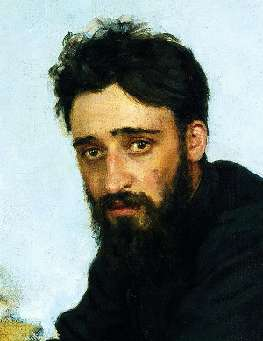

Борис Акунин
Мой календарь
Сегодня день рождения Всеволода Гаршина (1855 - 1888). Он был хороший писатель, но я люблю его не за это.
Гаршин был благородный безумец. Вернее сказать, психически нездоров он был во времена обострений, а благородным - всегда, даже в периоды помутнения рассудка.
Впрочем, поступки Всеволода Михайловича, даже когда он не отрывался от реальности, тоже часто бывали безрассудны.
Во время Турецкой войны он добровольно пошел в солдаты. Не из патриотизма или, упаси боже, любви к военным приключениям (Гаршин был пацифист), а из солидарности с простым народом. Их же, бедных, не спрашивают, хотят они воевать или нет? Они страдают, и он должен. На войне Гаршин был тяжело ранен, чудом не погиб. Но это его не образумило.
Когда в разгар революционного террора произошло покушение на диктатора Лорис-Меликова, писатель среди ночи ворвался в бдительно охраняемую резиденцию министра, был схвачен, обыскан, раздет догола, но так умолял об аудиенции, что получил ее. Стал горячо убеждать государственного мужа, что террориста обязательно нужно помиловать - это-де остановит вакханалию политических убийств. Лорис-Меликов обещал, Гаршин прослезился. Террориста потом, разумеется, все равно повесили.
Самый известный рассказ Гаршина «Красный Цветок» - про сумасшедшего, который в одиночку сражается с Мировым Злом. Так Всеволод Михайлович, видимо, себя и ощущал.
Однажды, во время сильной грозы его обнаружили на крыше дома. Он стоял, раскинув руки, воображал себя громоотводом. Хотел спасти жильцов от удара молнии.
Победить Красный Цветок Гаршину не удалось. Однажды ночью он покончил с собой, кинулся в пролет лестницы.
Не дай нам бог сойти с ума, уж лучше посох и сума. Но если уж сойдем, по крайней мере давайте сделаем это красиво.